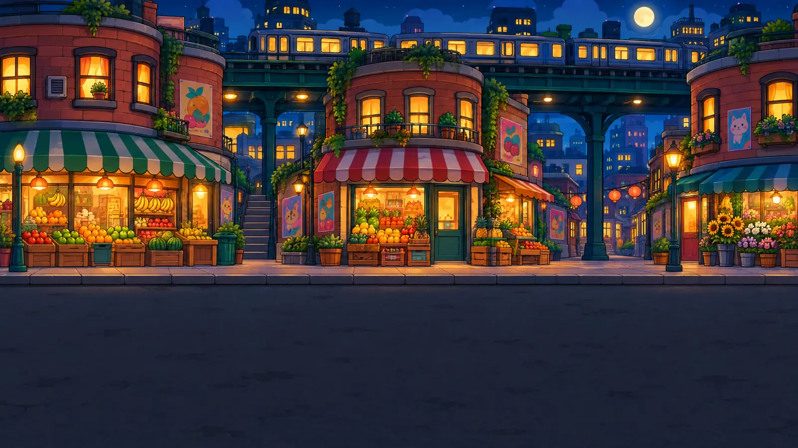

Free games · no download · no sign-up
Play the arcade.
Play games. Earn supplies. Build a neighborhood of your own.
At least 50% of distributable profit supports community programs. How giving works
Choose your cabinet.
Every game earns supplies for your city.
Keep the floor open
Watch
Freeze the Rent, the video
Listen
The soundtrack
Twelve electronic mixes of Freeze the Rent and Never Taken a Dime, the same music that plays in the games. Pick a track; sound only starts when you press play.
Read
Three Roads to the Capitol
Browse 43 illustrations from the original Mamdani and El-Sayed chapter. Read the full comic for the dialogue, sources, Talarico’s story and Issue #2: The Healer.
How the money works
The split applies to distributable profit: money received from ads, Patreon and any merch sales, minus documented project costs and disclosed operating-reserve additions, plus reserve releases. Fees and refunds are counted once. The reserve and costs are explained in the Community Pot.
The community share starts at 50% and rises to 99%. Recipients support causes the featured politicians care about; they are not campaigns or politicians. We plan to invite their recommendations. No endorsement or participation is implied. Chosen recipients and payment receipts will appear in the Community Pot.
No reconciled financial statement is published yet. Reports will distinguish money received, expenses, reserves, allocated shares and actual payments. Unpaid allocations are not described as donations already delivered.
If the site gives less than $50 in a month, Tony personally covers the difference so total monthly giving reaches $50, with his top-up going to a local Seattle cause. For example, $30 from the site means $20 from Tony; $0 means $50. Personal top-ups are separate from site profit. See the split and milestones.
How it works
You can't buy a politician. You can back what they fight for.
Free games, optional support, and a growing share for the community. AdsToAid starts by allocating 50% of distributable profit to community programs. That share rises as Tony reaches the milestones below.
You play
Five free games earn supplies for one shared city. Build homes, restore streets and open places for your neighbors. No account needed.
Advertisers pay
Advertising is one way the arcade can earn. AdSense approval is pending. Optional $5 Patreon membership also supports the project; merch is planned. Playing never requires a purchase or an ad click.
At least half goes to aid
After documented costs and reserve movements, the community receives a 50%–99% share. The table shows the causes that inspire us and what Tony plans to pay for with his own share. These are goals, not donations already made.
How the split moves
“The more I make, the smaller my cut.” Tony’s share of future profit drops as his lifetime profit payouts reach each milestone. His plans are paid from his share. The community’s percentage never steps backward.
How milestones and projected totals work
Milestones do not reset each month or year. Earlier payouts are not recalculated. If a payout crosses a threshold, the next rate applies to the portion beyond it.
The community totals in the table are approximate projected allocations assuming shares are paid in full, not donations already delivered. They exclude Tony’s personal top-ups; payment holds can make actual paid totals differ. Cause examples show the work we aim to support, not confirmed recipients or endorsements.
The rules
- The split covers all project revenue: ads, Patreon and any merch sales, after documented costs and disclosed reserve movements. Tony’s personal milestone purchases come from his share, not operating expenses.
- Revenue is counted when received. Allocations, payments, unpaid balances and personal top-ups are reported separately.
- The community percentage rises at each milestone and never steps back. Policy changes are dated in the Community Pot.
- Recipients are programs and groups, never campaigns or politicians.
- Policy updates and corrections remain visible. Tony’s direct payments plus payments to his own businesses cannot exceed cumulative site-funded community payments; personal top-ups do not raise that limit.
Who makes this
Tony makes AdsToAid using ChatGPT, Claude and Cursor, with art from Makko and audio from ElevenLabs. Tony owns Makko. Games are free; Patreon support is optional. Actual project-paid costs and any payments to Tony’s businesses will be disclosed in the Community Pot.
Independent. Not a campaign.
Fan-made, unofficial satire with no ties to any candidate, campaign, or party, and not authorized by one. Membership is not a campaign contribution. Write to us · Report a problem